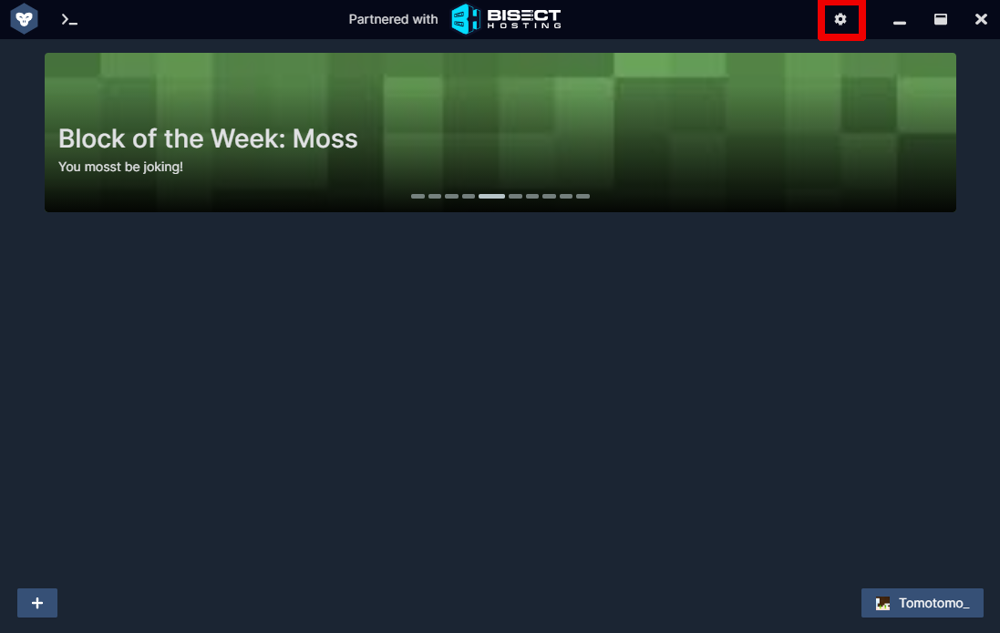
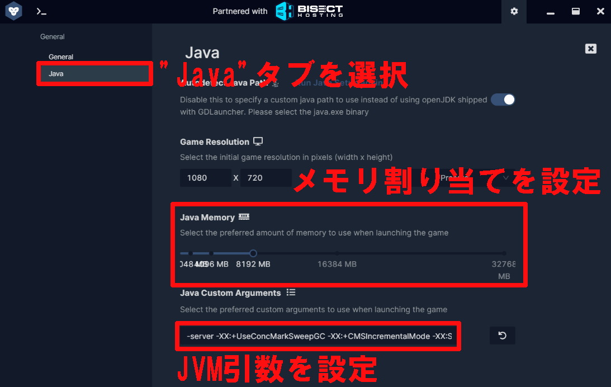
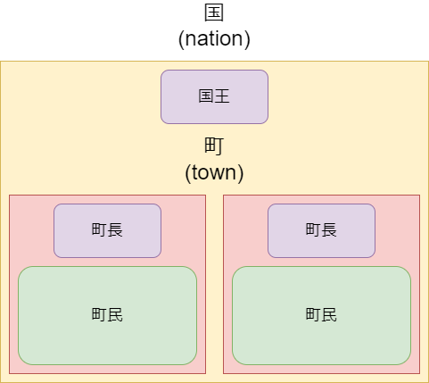

㊙情報
- ・JVM最適化による軽量化
- ・お金の集め方
- ・取引禁止アイテム
- ・店区画への出品・Vending Blockの使い方
- ・Townyの使い方・土地の入手方法
- ・投票
- ・スキルツリーシステム
- ・ウィークリークエスト
- ・ガチャの回し方
- ・インフルエンサー・クリエイターサポート
- ・ディメンション一覧
JVM最適化による軽量化
- 1.GDLauncherのホームから設定を開く。(赤で囲んだマーク)
- 
- 2.JVM引数の入力欄(赤で囲んだところ)に以下の引数を入力する。(コピペして使ってね)
- -server -XX:+UseConcMarkSweepGC -XX:+CMSIncrementalMode -XX:SurvivorRatio=4 -XX:TargetSurvivorRatio=80 -XX:NewRatio=3 -Xss64M -XX:ParallelGCThreads=2 -XX:ConcGCThreads=2 -XX:ReservedCodeCacheSize=128M -XX:CompressedClassSpaceSize=128M -XX:MinHeapFreeRatio=20 -XX:MaxHeapFreeRatio=70 -XX:CICompilerCount=4 -XX:InlineSmallCode=8K -XX:MaxInlineSize=128 -XX:MaxTrivialSize=32 -XX:InitialTenuringThreshold=10 -XX:MaxTenuringThreshold=15 -XX:CompileThreshold=500 -XX:CMSInitiatingOccupancyFraction=80 -XX:+UseCMSInitiatingOccupancyOnly -XX:+CMSScavengeBeforeRemark -XX:+ParallelRefProcEnabled -XX:+AggressiveOpts -XX:+OptimizeStringConcat -XX:+UseFastAccessorMethods -XX:+CMSScavengeBeforeRemark -XX:+CMSClassUnloadingEnabled -XX:+DisableExplicitGC -XX:-UseGCOverheadLimit -XX:+UseCompressedOops -XX:+UseCodeCacheFlushing -XX:MaxGCPauseMillis=10 -XX:UseSSE=4 -XX:UseAVX=2 -Duser.language=en -Duser.country=US -Djline.terminal=jline.UnsupportedTerminal
- 3.最大メモリを指定する。
- 
| お使いのPCのRAM | 最大メモリ |
| 8GB | 4096 |
| 16GB | 8192 |
| 17GB以上 | お使いのPCと相談 |
お金の集め方
- 資源ワールドに生成されるMuscarium鉱石を鉱石買取所で買い取って貰うことが主なお金の入手方法です。

- 画像：Muscarium鉱石
- よりお金を稼ぎたい場合は、百貨店でアイテムを出品してお金を稼ぐことができます。
取引禁止アイテム
以下のアイテムを取引した場合、販売者、購入者共に処罰が行われる場合があります。| アイテム名(en) | アイテム名(jp) | アイテムID | 理由 |
| Orb of Skills | スキルのオーブ | contenttweaker:vote_skill | スキルツリーに影響を与えてしまうため |
| Kamesteel Ingot | かめスチールインゴット | contenttweaker:kamesteel | 生産量抑制アイテムとしての役割が損なわれるため |
| Kamesteel Nugget | かめスチールナゲット | contenttweaker:nugget_kamesteel | 生産量抑制アイテムとしての役割が損なわれるため |
店区画への出品・Vending Blockの使い方
- 当サーバーの要といえる経済要素、それを支えるのが店区画です。
- 店区画ではプレイヤーが商業スペースを購入することで出品できます。
- 店区画の購入
- 店区画はスポーン北のトンネルの先にあります。
- 区画は未購入の区画に立ち、/plot claim と入力することで価格の表示と購入の確認が行われます。
- 販売/買取方法
- 販売/買取にはVending Blockを用います。
- Vending Blockのレシピ(石の部分は様々なブロックに置き換えることができます。)

- Vending Blockの使い方(画像の番号と説明の番号は対応しています。)

- 自分が設置したVending Blockを右クリックとGUIが開きます。
- 共通：
- ④ショップを閉じる/開く
- 物を売りたい時：
- ①アイテムの在庫と後述する回収用Banknoteを置く
- ②売りたいアイテムを置く(個数は置いた数売ることができる)
- ③販売価格を設定するために後述する設定用Banknoteを置く
- 物を買い取りたい時：
- ①後述する支払用Banknoteを置く
- ②買取価格を設定するために後述する設定用Banknoteを置く
- ③買い取りたいアイテムを置く(個数は置いた数売ることができる)
- 各種Banknoteについて
- 各種Banknoteはコマンドで入手することができます。

使用可能コマンド一覧
- 他プレイヤーのVending Blockはブロック右クリックで購入/売却を行うことができます。
- 価格や物品は画面上部のに表示されます。
- エンチャント等は表示されないので看板などに記入するとプレイヤーが欲しがるかも...?
- Banknoteの仕様
- ・支払用Banknoteの期日は一度でも買取によって引き出されると有効期限が3日に戻ります。
- ・有効期限が過ぎるとただの紙くずになるのでショップはこまめに確認して下さい。
- ・1日に1%の手数料が引かれます。
Townyの使い方・土地の入手方法
使用可能コマンド一覧
- Townyチュートリアル
- 
- ・土地の入手のみを目的とする場合
- 1. 町長とのツテが無い場合は/town list <ページ数> by openや /town list <町の名前> を駆使して住みたい町を決める。
- 2. /town join <町の名前>で町に参加する。
- 3. /plot claim で土地を購入する。
- ・自分が町長になって区画の管理をする場合
- 1. /town new <町の名前> で町を作成する。
- 2. /town deposit <金額> で町の銀行にお金を入れる。(維持費や区画の購入に用いるため)
- 3. /town claim で区画を購入する。
- 4. 区画を他プレイヤーに販売したい場合は/town forsale <金額> で区画を販売する。
- 5. 必要に応じて町民から徴収する税金の税率を設定する。
- 6. 必要に応じて各種設定をする。
- ・自分が国王になって区画の管理をする場合
- 1. 町の町長になる。
- 2. /nation new <国の名前> で国を作成する。
- 3. /nation deposit <金額> で国の銀行にお金を入れる。(維持費に用いるため)
- 4. 必要に応じて国民から徴収する税金の税率を設定する。
- 5. 必要に応じて各種設定をする。
- 用語集
- ・国
- 町長が複数の町を包括するために作成する町の集合体。作成に3000$必要。
- 作成費は町の銀行から徴収されるため、コマンドで町の銀行にお金を入れておく必要がある。
- 町を国に所属させると町の区画の上限に加えて10区画追加される。
- 1日に国王は維持費として200$支払わなければならない。
- 維持費が支払われなかった場合は支払われなかった翌日に国が崩壊する。
- 維持費を補完するために国民から税金を徴収することができる。(高すぎると住民が入ってこないので注意！)
- ・町
- 区画を販売する役割を持つ。作成に1200$必要。
- 区画をコマンドで購入し、町に所属していないプレイヤーに土地を販売することができる。
- 最初の区画は通常800x(1.3x町が所有する区画数)$で購入できる。
- 1日に町長は維持費として町が所有する区画×5$支払わなければならない。
- 維持費が支払われなかった場合は支払われなかった翌日に町が崩壊する。
- 維持費を補完するために町民から税金を徴収することができる。(高すぎると住民が入ってこないので注意！)
- ・区画
- 16x16x256ブロックで1チャンク分の土地。
- 町長は町が所有している区画に隣接した区画で/town claimで区画を購入できる。
1区画購入するごとに5%の価格が上乗せされる。 - デフォルトの上限は8。上限を増やす方法は/town buy bonus <量>で買うか、国に所属することで増やすことができる。
前者の方法で増やす場合は1区画拡張するごとに15%の価格が上乗せされる。 - 区画には属性が5種類ある。
- ・デフォルト
- 町長、購入者のみが編集できる区画。
- ・アリーナ(arena)
- 基本的な内容はデフォルトと変わらない。ただしPvPが可能。
- ・大使館(embassy)
- 他の町の住人が購入・編集できる区画。町長は追加の大使館税を徴収することができる。
- プレイヤーが町を抜けた場合、そのプレイヤーが持っていた大使館区画は所有権が失われない。
- ・ワイルド(wilds)
- 地形ブロックを除きすべての町民が編集可能な区画。植林場などの用途がある。
- ・宿(inn)
- 基本的な内容はデフォルトと変わらない。ただし区画の所有者以外でもベッドを使用できる。
- デフォルト、大使館属性の区画のみ町民に販売することができる。
- ・ホームブロック
- 町が作成された時に町長が立っていた区画。
- /town spawnコマンドをした時のテレポート先の区画。
- 区画を作成する際、前哨基地を除いてホームブロックに隣接した区画を作成する必要がある。
- ・前哨基地
- 前哨基地は特殊な区画で、ホームブロックから離れた場所に区画を設置できる。
- 通常の区画と同様、アリーナや大使館等の属性を設定できる。
投票
- monocraftまたはJapan Minecraft Serversで投票することにより、
１日１回報酬を受け取ることができます。 - Voting Reward(投票報酬)はFTBQuestsの「投票」でアイテムと引き換えることができます。
ウィークリークエスト
- 報酬付きのクエストが毎週追加されます。
- クエストはFTB Questsで確認できます。
- クエストの総達成回数はランキングでロビーに表示されます。
※重要 スキルツリーシステム
- 当サーバーでは取引活性化のため、スキルツリー制度を導入しております。
- スキルツリーはFTBQuestsの「スキルツリー」で設定することができます。
- スキルツリーの開放にはOrb of Skills(スキルのオーブ)というアイテムとプレイ時間が必要です。
- Orb of Skillsの必要個数や必要プレイ時間などは下の画像を参照してください。
- Orb of Skillsは投票で貰えるVoting Reward(投票報酬)をFTBQuestsの「投票」で引き換えることができます。
- スキルを開放しても、資源ワールドや攻略ワールドでは開放されていない場合があります。その場合は、/gsと入力して下さい。

- ※注意事項
- ・取得できるスキルはTierにつき1個(合計3個)です。
- ・取得できなかったスキルは二度と取得できません。
- ・Tier3スキルを取得するとMuscariumが採掘不可能になります。
インフルエンサー・クリエイターサポート
- 当サーバーはTwitterや動画投稿サイトを活用した広報活動をして頂けるプレイヤーを支援します。
- MuscariServer公式Twitterのプレゼント企画ツイートをフォロー&RTで抽選でプレゼントが貰えます。
- 受け取り方法
- 1.ゲーム内で/twitter set <@から始まるユーザー名> 例：/twitter set @taisa_ism と入力する。
- 2.Discordで抽選結果が発表されたらFTBQuestsの「受信箱」にプレゼントが届いているので受け取る。
- ・Youtube/ニコニコ動画
- Discordの動画チャンネルにMuscariServer関連の動画を貼るとガチャを回せるコイン10枚が貰えます。
- 条件
- ・タイトルに「MuscariServer」が入っていること。
- ・生放送アーカイブでないこと。
- ・無編集垂れ流し動画でないこと。
ディメンション一覧

- ・メインロビー
- サーバーに参加して一番初めに立ち入る場所。
- 様々な世界とのゲートを繋いでいます。
- 施設
- ・オークション会場
- ・広場
- ・ポータルスペース
- ・ネザーゲート
- ・黄昏の森ゲート
- ・アスレチック
- アスレチック専用ワールドです。
- 初回クリアで賞金が貰えます
- 各アスレチックにランキングが表示されていて、鯖民とタイムを競うことができます。
- ・カジノ
- カジノのゲームができるワールドです。
- お金をを賭けることができます。
- 施設
- ・スロットマシン
- ・ブラックジャック
- ・ルーレット(追加予定)
- ・ネザー
- ※リセットが定期的に行われます。拠点作成は非推奨です。次回リセット：未定
- HeatandClimateの気候システムにより一部地域でダメージを受けるので注意してください。
- ・エンド
- ※リセットが定期的に行われます。拠点作成は非推奨です。次回リセット：未定
- HeatandClimateの気候システムにより全域でダメージを受けるので注意してください。
- ・黄昏の森
- ※リセットが定期的に行われます。拠点作成は非推奨です。次回リセット：未定
- 日の出が訪れないモンスターの魔窟と化した不思議なディメンション。
- モンスター達は建物を築いてプレイヤーの挑戦を待っている...
- ・Erebus
- ※リセットが定期的に行われます。拠点作成は非推奨です。次回リセット：未定
- 人のいない自然にあふれた大洞窟に虫が暮らしている世界。
- ヤツらは人の匂いを嗅ぎつけて襲ってくる。
- ・？？？
- ※リセットが定期的に行われます。拠点作成は非推奨です。次回リセット：未定
- 縺昴ｉ繧偵∩縺ゅ￡繧九→
- 縺ｪ縺ｫ繧ゅ↑縺
- 縺ｪ縺ｫ繧ゅ↑縺?↑縺ｫ繧ゅ↑縺?↑縺ｫ繧ゅ↑縺?↑縺ｫ繧ゅ↑縺?↑縺ｫ繧ゅ↑縺?↑縺ｫ繧ゅ↑縺?↑縺ｫ繧ゅ↑縺
- 縺励ｍ縺ｫ縺?縺代?縺｡縺九▼縺上↑
- ・建築
- 景観重視のワールド。
- ※景観を損なう施設や機械等を大量に置いた場合、運営により注意または撤去される場合があります。
- ・攻略
- 攻略重視のワールド。
- 建築に自信がない人やmodでたくさん遊びたい人向け。
- ・資源
- ※リセットが定期的に行われます。拠点作成は非推奨です。次回リセット：未定
- オーバーワールドの資源を集めることができます。


© 2020 Muscari Server All Rights Reserved.